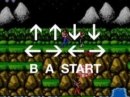

About Me
I've been a gamer since I got my first cosole, Colecovision, when I was 8 years old. I spent hours playing Zaxxon, Venture, and Turbo. I grew up playing games on Intellivision, Atari, and Commodore 64. In University, I spent many late nights with Sonic and trying to to the final level of Earthworm Jim on Sega. Playstation and Xbox soon came along, and after many enjoyable years, I'm now the proud owner of a PS3, XBOX One S, and Nintendo Switch. My next purchase will be a PS5, which is being released at the end of 2020!
Games I Play
I have always enjoyed the Resident Evil series and usually play them through right to the end. When I was on maternity leave, I spent my one kid-free evening a week playing Dead Island, including all the side challenges. Fittingly, I played the sequel (Riptide) when I was on leave with my second daughter :) I currently enjoy playing Fortnite in a squad with my girls whenever I get the chance - they're already better than me!

Strategies & Cheats
There are always cheats you can use to get the biggest and baddest guns or skip the hard parts, but when I'm stuck, I usually just look online for a walkthrough. There are a lot of YouTube videos playing through levels and you can usually pick up pointers on what guns are best to defeat the bosses you're up against.